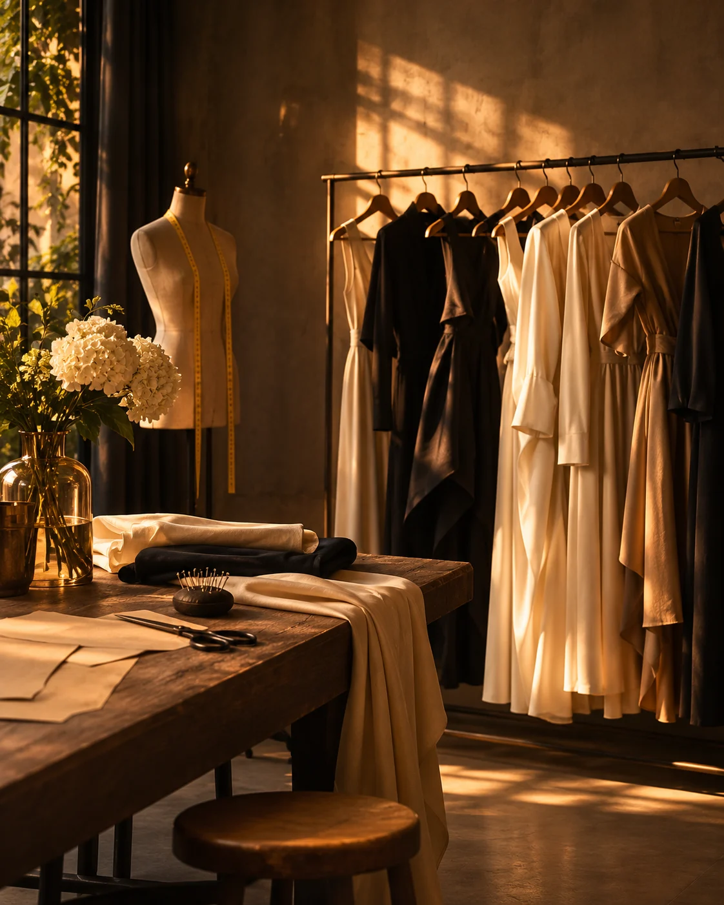

Vestido Aurora
Linho · areia
R$ 890
Moda autoral · Atelier independente
Peças pensadas com tempo, desenhadas para acompanhar o seu.
Feito para ficar.
Feito para ser seu.
A NOIRÉ nasceu entre moldes, tecidos e conversas sobre o que faz uma peça permanecer no guarda-roupa. Dessa inquietação veio uma escolha: desenhar com intenção, aproximando matéria, forma e vida cotidiana.
Criamos roupas para acompanhar quem você é hoje e as mudanças que fazem parte de cada história.
Conheça nosso processo ↗
Nosso propósito é criar roupas com presença e simplicidade, respeitando a matéria-prima e o tempo de quem as veste.
Dentro do atelier
Escala cuidadosaPeças desenvolvidas em pequenas séries.
Forma a serviço do usoO desenho considera movimento, combinações e rotina.
Matéria com intençãoLinho, algodão e viscose escolhidos pela textura e pelo toque.
02 / Coleção Essência
Peças para atravessar a rotina
com leveza e intenção.
Peças selecionadas da coleção
Linho · areia
Alfaiataria · carvão
Couro · preto
Crepe fluido · preto
Edição impressa · capa artesanal
Para informações sobre tamanhos, disponibilidade e cuidados, fale com nosso atelier.
03 / Editorial Essência
Texturas, volumes e luz natural revelam o caráter de cada peça da coleção.
04 / A experiência
Cada escolha começa com escuta. Conversamos sobre sua rotina, as peças que já fazem parte dela e como você quer se sentir ao vestir.
Uma conversa sobre rotina, referências e intenção.
Forma, caimento e detalhes ganham contorno.
Os ajustes definem o equilíbrio e a liberdade de movimento.
Uma coleção nasce do diálogo entre forma, matéria e o jeito de viver de cada pessoa.
Recortes e proporções pensados para acompanhar o corpo sem prender os gestos.
Linho, algodão e superfícies naturais dão profundidade à paleta da coleção.
Formas simples se combinam entre si e encontram espaço em diferentes momentos.
06 / Para saber
Algumas informações para escolher, vestir e cuidar das suas peças.
Consulte a tabela de medidas de cada peça e compare com uma roupa de caimento semelhante. Se precisar, envie sua dúvida pelo formulário.
Linho, algodão, alfaiataria e couro aparecem em diferentes texturas e tons na coleção Essência.
Siga as instruções da etiqueta. Para tecidos naturais, prefira lavagem delicada e secagem à sombra.
Envie uma mensagem ao atelier com o nome da peça e o ajuste desejado para consultar as possibilidades.
07 / Um próximo passo
Converse com o atelier sobre a coleção, o caimento ou uma peça feita para você.